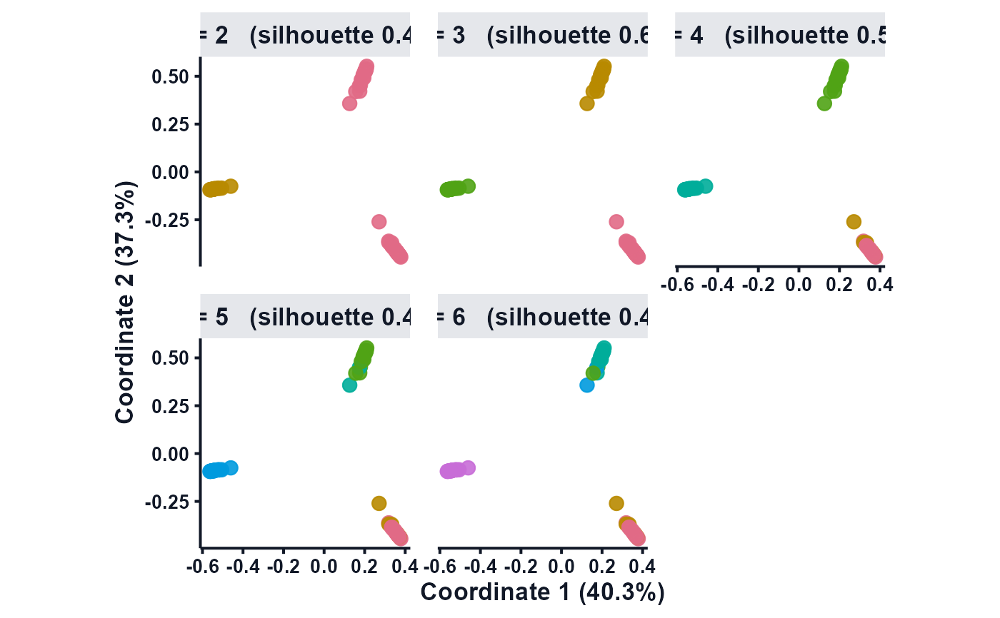

Show the clustering at every k (see how it deteriorates)
Source:R/manuscript-viz.R
cluster_k_sweep.RdRather than only reporting the best \(k\), project the objects to a fixed 2-D embedding and recolour them by the \(k\)-cut for each candidate \(k\) in a grid, annotating the average silhouette per panel. This makes it visible how the structure splits and degrades as \(k\) grows.
Usage
cluster_k_sweep(
x,
k_range = 2:6,
linkage = "ward.D2",
embed = c("pca", "umap", "tsne"),
ncol = 3,
point_size = 2.2,
alpha = 0.9,
palette = "Dark 3",
base_size = 13
)Arguments
- x
A fitted result (
$DistM), a dissimilarity, or aList.- k_range
Candidate cluster counts to display.
- linkage
Agglomeration method used to cut the fused dissimilarity.
- embed
Embedding for the (fixed) 2-D coordinates:
"pca"(default),"umap"or"tsne".- ncol
Columns in the panel grid.
- point_size
Diameter of the plotted points (default
2.2); raise it for larger, clearer markers.- alpha
Point opacity (default
0.9).- palette
Discrete
hcl.colorspalette used to colour the clusters (default"Dark 3").- base_size
Base font size passed to the ggplot2 theme.
Value
Invisibly the ggplot object (also printed, so it draws on an open
device); the average silhouette per \(k\) is attached as the attribute
"silhouette".
Details
The panels are drawn with ggplot2 for a clean, high-resolution result
whose quality is preserved when the figure is rescaled – save the returned
object to a vector device (PDF/SVG) or a high-DPI raster for publication, e.g.
ggplot2::ggsave("ksweep.pdf", cluster_k_sweep(fit), width = 9, height = 6).
Examples
# \donttest{
data(mosaic_toy)
fit <- M_ABC(mosaic_toy$List, numsim = 40, NC = 3)
#> M_ABC: source 1 of 2 (weighting = var) ...
#> M_ABC: source 2 of 2 (weighting = var) ...
#> M_ABC: building consensus dissimilarity (C++ kernel) ...
cluster_k_sweep(fit, k_range = 2:6, point_size = 3)

# }